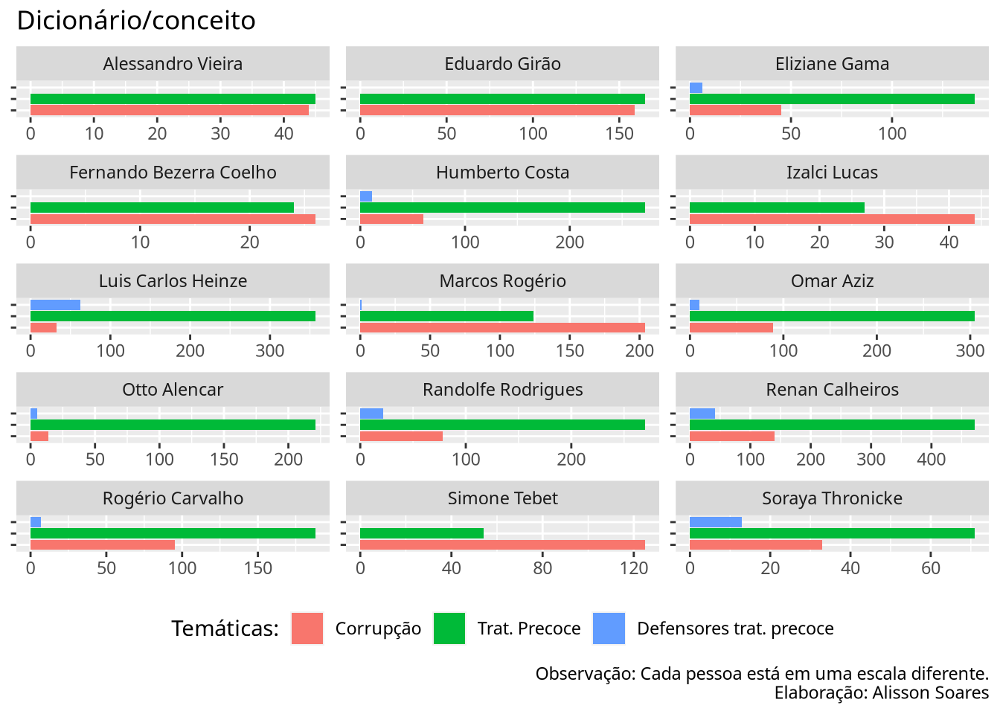

18 Dicionário
A conversão em matrizes e dessa para DTM é um passo intermediário crucial em diversas abordagens de análise textual, como TF-IDF e Topic Modeling.
Vamos gerar uma métrica de conceitos a partir de de dicionários de termos. Para cada conceito, escolhi um conjunto de palavras. As categorias como as palavras destas foram escolhidas de modo rápido, não sistemático. O vetor de vacinas foi comentado pois rodei previamente, os termos relacionados a vacina predominavam em todos os casos.
library(quanteda)
cpi.corpus <- corpus(NT_falasJuntasCount, docid_field = "nome", text_field = "falas")
# Criando um Document Term Matrix
# o processo abaixo demora um pouco
cpi.dfm <- tokens(cpi.corpus, remove_punct = TRUE) %>%
dfm() %>%
dfm_remove(pattern = SW )
# utilizando a lista de stopwords que criamos anteriormente
#tokens_select(pattern = SW, selection = "remove")
dict <- dictionary(list(
tratPre = c("cloroquina", "ivermectina", "azitromicina", "Kit", "precoce", "ozônio"),
tratPre.defensores = c("Raoult", "Zelenko", "Yamagushi", "Zebalos", "Wong", "Zanotto"),
# vacinas = c("vacinas?", "CoronaVac", "Sinopharm", "CanSino", "Butantan", "AstraZeneca", "Oxford", "Comirnaty", "Bharat", "BioTech", "BioNTech", "Pfizer", "Janss?en", "Johnson", "Spikevax", "Moderna", "Sputnik", "Gamaleya"),
corrupcao = c("corrup.*", "propin.*", "superfatur.*", "prevaric.*")))
# rodando nosso dicionário
dict_dtm <- dfm_lookup(cpi.dfm,
dictionary = dict,
valuetype = "regex",
nomatch = "_unmatched")
# nomatch = "semCorrespondencia")
# supondo que nosso dicionário seja minimamente bom
# vendo o quanto senadores abordaram certos temas
dict_dtm[5:10,]
## Document-feature matrix of: 6 documents, 4 features (8.33% sparse) and 1 docvar.
## features
## docs tratPre tratPre.defensores corrupcao _unmatched
## Eduardo Girão 165 0 159 61698
## Humberto Costa 272 11 60 57039
## Simone Tebet 54 0 125 51548
## Eliziane Gama 141 6 45 49397
## Rogério Carvalho 188 7 95 50114
## Luis Carlos Heinze 357 62 33 49666Gerando um gráfico com o ggplot
# vamos renomear os labels com os seguintes rótulos
rotulos <- c( "Corrupção", "Trat. Precoce", "Defensores trat. precoce")
# retirar a ultima coluna que não nos é útil
dict.df <- convert(dict_dtm[1:15,-5], to = "data.frame") %>%
tidyr::pivot_longer(.,
cols = names(dict),
values_to = "Valores")
ggplot(dict.df, aes(x = name, y = Valores, fill = name ) ) +
geom_col() +
labs(title = "Dicionário/conceito", x = NULL, y = NULL,
caption = "Observação: Cada pessoa está em uma escala diferente.\nElaboração: Alisson Soares",
fill = "Temáticas:"
) +
theme(legend.position="bottom",
text = element_text("Temáticas:")) +
# Mudando os nomes das variáveis na legenda
scale_fill_discrete(labels = rotulos) +
# Retirar os rótulos
scale_x_discrete(labels = NULL) +
facet_wrap(~doc_id, ncol = 3, scales = "free") +
# rotacionando o gráfico
coord_flip()